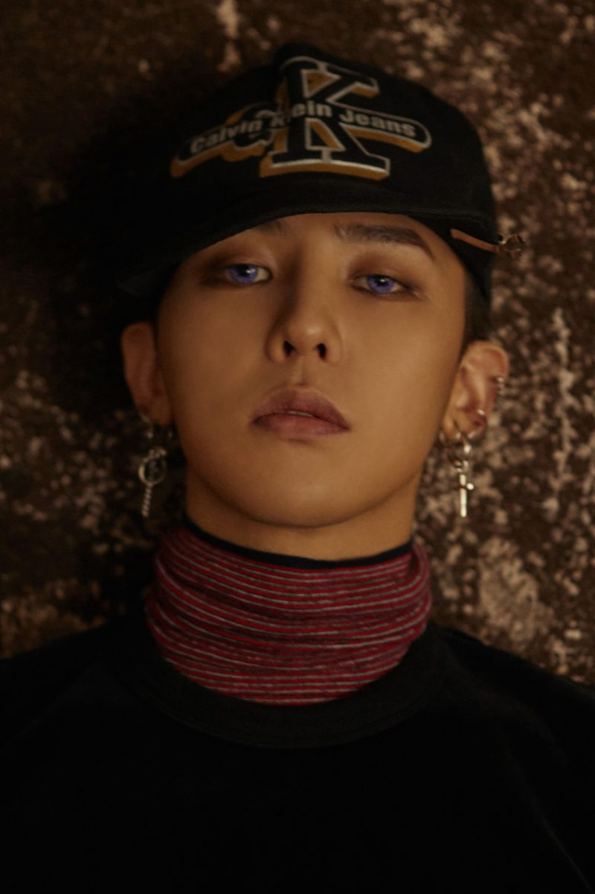

연습생 기간은 SM엔터테인먼트에서 5년, YG엔터테인먼트에서 6년으로, 총 11년이다. 어린 시절부터 많은 방송 경험을 쌓아왔으며 5세 때 뽀뽀뽀 프로그램에 출연한 적이 있고 YG 엔터테인먼트 연습생 오디션 합격에 도움이 되었던 룰라의 뮤직비디오에 꼬마 룰라로 참여한 경력이 있었다. 또한 아들의 재능을 일찍 알아본 어머니가 G-DRAGON을 데려가서 다양한 오디션과 대회에 자주 참가시켰다고 했었다. 1995년에 꼬마 룰라가 해체되었고 이후에 가족과 스키장에 놀러갔다가 우연히 춤 경연 대회에 참가하였는데 이곳에서 1위를 했었다.
이때 그 대회의 사회자였던 SM 엔터테인먼트의 이수만의 눈에 띄어서 회사에 G-DRAGON을 영입하였고 SM 엔터테인먼트에서 연습생 생활을 8살 때부터 약 5년 간 했었다. 그러다가 G-DRAGON이 친구의 집에서 우 탱 클랜의 음악을 접하게 되었고 이때부터 지누션이 하였던 힙합 아카데미에 들어가서 랩을 배우기 시작했었다.